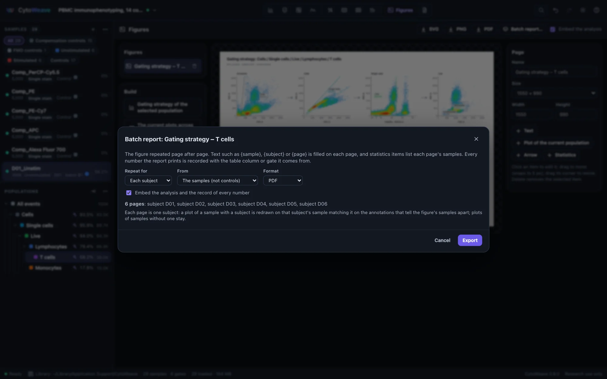
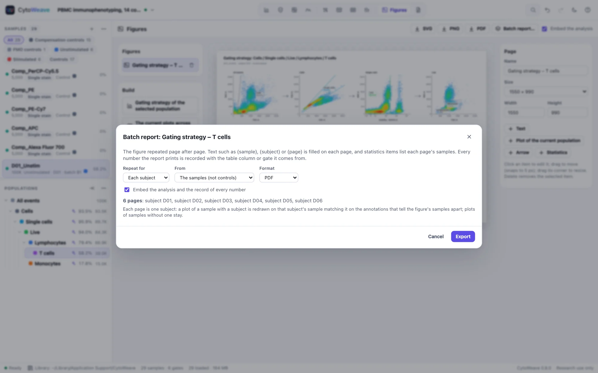
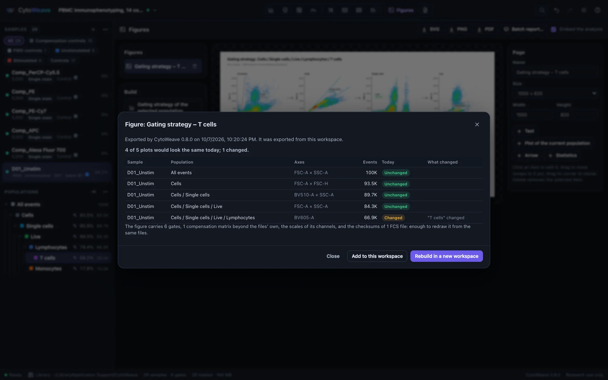
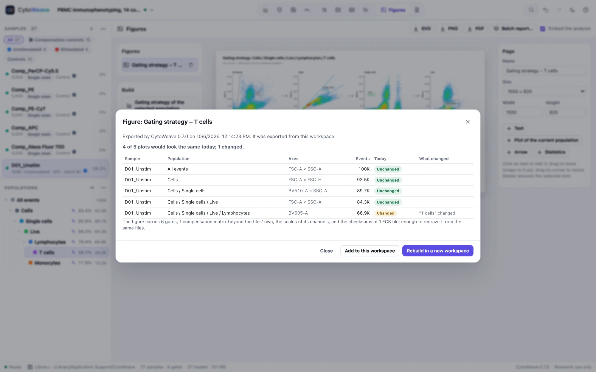
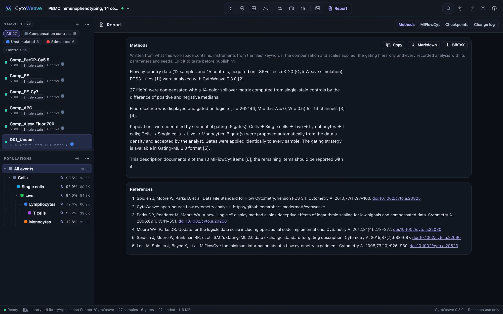
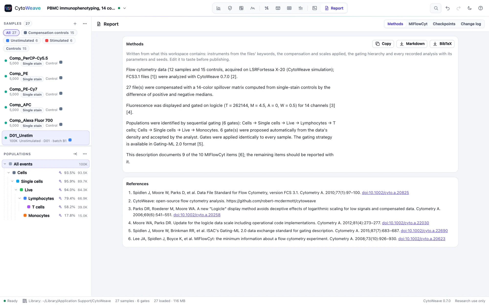

Figures, methods and checkpoints
Leave with what a paper needs: figures that stay true to the analysis until you export them, a methods paragraph written from what you actually did, and a record of every change.
Publication figures


The Figures view lays out pages of plots. Build one of three ways:
- Gating strategy of the selected population: one plot per step of its gating path, joined by arrows. Select the population in the Gate view first.
- The current plots across samples: the selected population's plots from the Gate view, one row per sample (the samples of the group shown in the sample list, up to 24).
- Blank page: add Text, a Plot of the current population, Arrows and Statistics yourself.
A Statistics item shows columns of a Tables table: for the samples whose plots are on the page, or for all of the table's rows (as it does on a page without plots). Choose the table, its columns and the text size in the item's properties. Values are those Tables computes, with ND and < LLOQ where a column has detection limits; the text shrinks to fit the box, and rows that still do not fit are counted below the table.
Text can hold placeholders, filled from the figure's samples and, in a batch report, on every page: {sample}, {page}, {pages}, {group}, {date}, {workspace}, and any annotation, such as {subject} or {condition}.
Any plot's ⋯ menu in the Gate view also has Add to figure. Click an item to edit it, drag it to move it (it snaps to 5 px), drag its corner to resize it, and press Delete to remove it. Pages come in slide (16:9), Letter and A4 portrait, Letter landscape and square sizes, or any width and height.
Plots in a figure stay live: they follow gate edits and compensation changes until you export. Export the page as SVG (to edit in Illustrator or Inkscape), PNG or PDF. PDFs are vector: text, axes, gates and labels are PDF text and lines, sharp at any zoom and searchable, and only the events are images. They use Helvetica, which every PDF reader has; a character outside its character set is written as its nearest ASCII (− as -, ≥ as >=).
Batch reports


A batch report repeats a figure page after page, the layout FlowJo users know from batch processing in the layout editor. Click Batch report… at the top of the Figures view and choose:
- Repeat for each sample. The plots of the figure's main sample (the one most of its plots are on, or the one you choose) are redrawn on each sample in turn. Plots of other samples stay on every page, so an FMO or an unstained control can sit beside each sample.
- Repeat for each value of an annotation, such as each subject or timepoint. A plot of a sample with that annotation is redrawn on the page's sample that matches it on the annotations that tell the figure's samples apart. Lay out subject 1's unstimulated and stimulated tubes, and each page shows that subject's unstimulated and stimulated tubes. When several samples could take a plot's place, the one sharing most of its annotations is drawn.
- From the experiment's samples (not controls) or a group's.
- PDF or PowerPoint. In PowerPoint, plots are pictures and statistics items are native tables, editable in PowerPoint, Keynote and LibreOffice.
The dialog lists the pages before anything is written, with a note for each gap: a subject without a stimulated tube (its plot is left empty, saying why), or two samples the annotations do not tell apart (the first is drawn; annotate what differs to choose). The choices are kept with the figure and travel with it in templates.
Every number a report prints is recorded with where it comes from: each statistics cell with its table and column, each gate label on a plot with its gate. The record goes into the file (a PDF attachment named cytoweave-report.json, or a part of the PowerPoint package) beside the analysis behind the plots. The validation suite recomputes every recorded number and reads the files back with openpyxl, python-pptx, pypdf and R's pzfx (see Science).
Figures that carry their analysis
A figure in a paper or a slide is usually cut off from the analysis that made it. CytoWeave's exports are not: every figure and plot exported as SVG, PNG or PDF carries a record of what it shows.
- The samples, by name and by the SHA-256 checksum of each FCS file.
- Every gate the plots depend on: each population's ancestors, the gates drawn on the plot and Boolean operands, with their per-sample adjustments.
- The scales of the channels and the compensation each sample was drawn with.
- Each plot's population, axes and event count, and the page layout.
The record goes in the SVG's metadata, a PNG text chunk, or a PDF attachment named cytoweave-provenance.json, which PDF readers list among the document's attachments; batch reports carry it for every page's plots. It holds no keywords and no event data. Untick Embed the analysis at the top of the Figures view to leave it out.
Opening an exported figure


Drop an exported SVG, PNG or PDF on CytoWeave (or open it like any file). The dialog says when and by which CytoWeave it was exported, from which workspace, and, plot by plot, whether it would look the same today: "Live changed; 84,450 events now, 84,284 in the figure", "the scale of APC-A changed (logicle → arcsinh)", "the compensation matrix changed". In another workspace, plots are matched by file checksum and population path. Then:
- Rebuild in a new workspace recreates the samples, gates, scales, matrices and the figure itself, exactly as they were, from the same files. The library finds them by checksum; files it does not have can be added, whatever their names now.
- Add to this workspace places the figure back in the open workspace, on its matching samples and populations.
The validation suite exports a 60-plot figure of 12 samples, reads its record back intact from all three formats, rebuilds it with every plot drawn from the same events, and checks that moving one gate flags exactly the plots it affects.
The methods paragraph


The Report view writes the methods from what the workspace contains, not from a template:
- the instrument and files, from the files' keywords;
- the compensation, and where it came from;
- the scales of the channels;
- the gating hierarchy;
- every recorded analysis with its parameters and seed: QC, unmixing, normalization, clustering, embeddings, model fits;
- the statistical comparisons you saved for the report.
References are numbered, with DOIs. Copy the paragraph, or download it as Markdown and the references as BibTeX. Edit it to taste before publishing. Gates proposed by an AI agent and accepted by you are described as such.
MIFlowCyt
The MIFlowCyt checklist (Lee et al. 2008) shows which items of the minimum information for a flow experiment the workspace documents and which are missing. CytoWeave fills what the files and the analysis record. The rest (the purpose of the experiment, specimen details, reagent clones and lots, instrument settings not in the files) belongs in the Workspace notes below it, which are saved with the workspace.
Checkpoints
A checkpoint keeps the gates, compensation and scales as they are, to compare with or return to later. Create one before you change an analysis, for example before adjusting gates for a revision:
- In Report → Checkpoints, click Create checkpoint and name it.
- Change the analysis.
- Select the checkpoint. CytoWeave lists what changed in words, such as "the Live gate moved by 3% of the axis" or "the compensation of 12 samples changed", and the effect on every population's frequency in the loaded samples.
- Restore returns to the checkpoint; the current analysis stays available through undo.
The change log
Every change to the analysis is recorded, newest first, and saved with the workspace: who made it (you, or which agent proposed it and what you decided), when, and what changed. Download it as JSON for an audit trail.